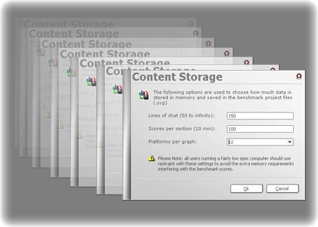

|
Clicking &
Dragging in SynthMark XP.
Go To: Back to Main.
Some objects in SynthMark XP can be moved, resized or selected
by dragging and dropping with your mouse. The following table has a complete
run down of all the SynthMark XP objects that you can interact with.
Clicking and Dragging Table:
|
Object
|
Type
|
Description
|
|
Controller Windows
|
Move
|
The pretty sub-windows
like message boxes, wizards & managers.
|
|
Explorer Borders
|
Resize
|
Resizes both
sides of the bar to show you more of either section.
|
|
The Main Window
|
Move / Resize
|
Just like a
normal program window, with maximize, minimize and more.
|
|
Explorer Panels
|
Minimize / Maximize
|
Make it
large, or make it small? The choice is yours.
|
|
Scroll Bar Arrows
|
Click and Hold
|
Move the
current page either direction slowly.
|
|
Scroll Bar Body
|
Drag
|
To move the current
page at your own pace either way.
|
|
Scroll Bar Gap
|
Click and Hold
|
Just like
the arrows but much faster.
|
|
Chat Scroll Bar
|
Intelligence
|
Moves with
the new text, until it is moved up then it wont automatically follow text until
it is placed at the bottom again.
|
Note that when you move anything in SynthMark XP, if there is
text within the objects that are resizing; the text will then wrap itself
onto the next line to remain visible. Some controls don’t wrap, they add
an ellipses at the end of the text to inform you that there is more text
there.

Copyright Information – Terms
& Conditions – Privacy Policy
|